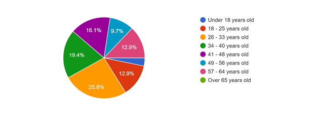
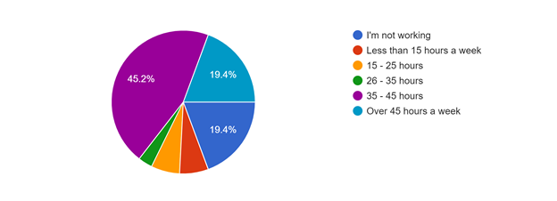
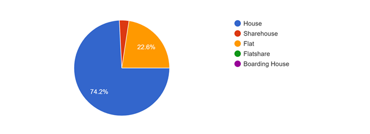
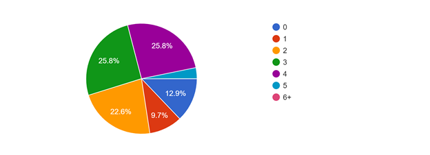
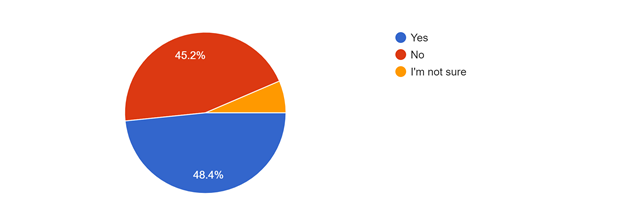
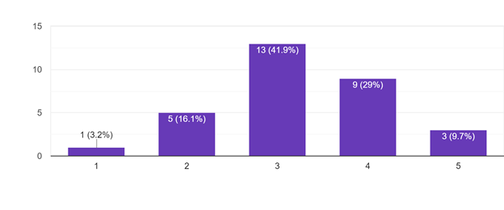
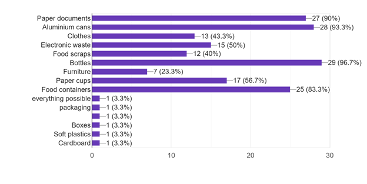
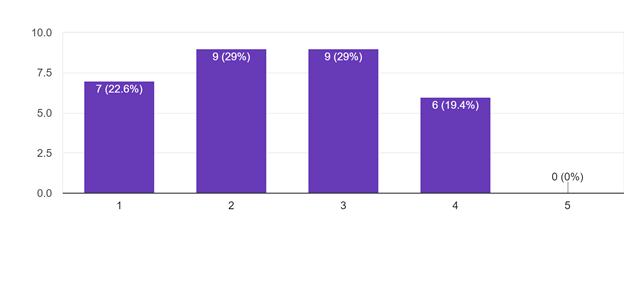
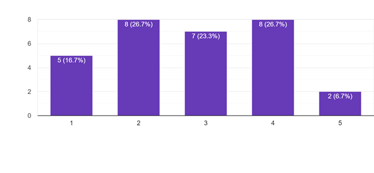

Research Appendix
Online Ethnography
Source
Data Record
Quotes
Themes
Reddit - /r/sydney
Best place for me to dump/recycle un-used PC parts?
“If they're working you could just try giving them away on Gumtree.”
“City of Sydney runs an e-waste drop-off once per month. Next one is on 14th September in Alexandria.”
“Ebay, Gumtree, Facebook Marketplace.”
There is a lot of information about how to recycle properly but it’s not accessible as it should be.
There are a lot of different suggestions as to how to deal with unused PC parts
People are willing to trade for old PC parts.
Reddit - /r/sydney
Can you recycle soiled pizza boxes? (Pieces of food and grease stuck to it)
“You're not meant to recycle stuff that has had food in it or has remnants of food. That goes in the normal bin.”
“Yeah go for it. Source: One thing I'm often sent out to do is fix/maintain paper recycling mills.”
“Check your local council website if unsure, different recycling plants can handle different things. If they don't have the info up can probably give them a call.”
Lots of conflicting information what is recyclable.
People need their information to come from a credible source.
Reddit - /r/sydney
Questions about donating textbooks and recycling paper
“You could post each book up on StudentVIP for people to come and collect off you.”
“Re the paper, if you have a shredder, shred it up and donate it to pet stores or shelters - they tend to need it for bedding. Or better yet, donate the paper to the places directly.”
“maybe recycle paper a little bit a time? or go the the local recycling center and recycle it there also try selling the textbooks on gumtree, i've sold a ton of mine on gumtree and made hundreds of dollars, there is also a free option, were you can just offer the textbooks for free.”
There are many different ways on how to recycle paper.
Reddit - /r/sydney
Solid information on recycling / what can we put in our yellow recycling bins?
“I agree that there's very little information about these things. I normally look for a recycling symbol, with plastics I assume only 1-6 are accepted. I remember ~10 years ago, Canterbury Council said they accepted 1-6 only.”
“I feel like this information is not taught enough nowadays because I remember having this information taught to us in schools almost every year but after schooling the knowledge kind of gets lost and I feel a lot of adults would fail a recycling test today.”
“I don't know where you heard that bottle caps go in general waste, but that's wrong.”
Conflicting information on what is recyclable and what isn’t.
Each local council has their own recycling specifications due to differing recycling contractors.
The kind of recyclables accepted by the council can change.
Reddit - /r/sydney
Where do I recycle old vegetable oil from my deep fryer? I live in the North Sydney area.
“Have a Google for transfer stations near you. They should do a boot load of rubbish/oil for free. I've got a steadily growing collection in my garage of old engine and deep fry oil that I keep meaning to take to a station some day. SOME DAY :)”
“I just drain it into a plastic bottle, wrap it in a bag and put it in the bin, I thought as long as you dont pour it down the drain its ok?”
“How old is old ? And what color is the oil ? If it isn't too bad you can use it for flavoring.”
There are many different ways on how to recycle oil.
Reddit - /r/sydney
Large Cardboard recycling without car
“talk to the building manager”
“Building manager usually gets rid of It”
The management takes care of waste for tennants.
Reddit - /r/sydney
Okay to drop off a swollen phone battery for recycling?
“So I dug out an old phone from a drawer to find the battery had swollen to 2x the thickness. I got it out and some quick googling assured me it was safe as long as it's not punctured”
“Just don't chuck them at the normal trash as sometimes they might burn it and that would cause an explosion”
“I'm motivated to check my old disused phones for swollen batteries now.”
There is no information on if an ewaste item needs to be of a certain condition.
Asking a question prompts other uers to check if they may have the same problem.
OzBargain - Mobile
Why Do You or Don't You Recycle Your Old Mobile Phone?
“Sold all mine. Best way to recycle anything”
“no incentive, and I don't like the idea of my phones being resold by someone else.” - "What incentive do you need?” - “Money”
“I just didn't know how.”
People would recycle more if they got something for it. Getting back a bit of what you paid for the item.
OzBargain - Home & Garden
“Someone's trash can be someone's treasure.”
“Perhaps places like Reverse Garbage or The Bower? Not sure what your local options are.”
“Our local garbage dump has a recycle facility. They will either recycle what they can or put it in their second hand shop for sale. Maybe you have something similar in your area?”
Second-hand markets are a popular option.
OzBargain - General Discussion
How Do You Recycle CD-ROMs and DVD-ROMs?
“A search shows that PC is definitely recyclable, but I don't know who if anybody collects it at the household level. I'd be interested in what you find out.”
While there is information available, it can be outdated or conflicting.
Whirlpool - Home
“In nsw I think the added cost per bottle is 15 odd cents but you only get 10 cents back. The rest goes into the cost of collecting and yes I believe that includes paying the person who collects them”
“No , not really, in QUEENSLAND I can take a bottle and get 10 cents, to a manned recycle station, these are privately owned businesses.”
People are interested in how recycling schemes work.
Whirlpool - Gadgets
What do you do with old gadgets?
“Try Freecycle, Freegle and ReUseIt recycling groups.”
“it just feels a bit like a shame to be discarding things which I have such fond memories of”
People are hesitant to dispose of items with sentimental value.
Whirlpool - Photography
Recycling obsolete camera equipment
“I've tried doing some internet searches but am having very limited success in finding any current information on organisations which accept obsolete camera equipment for re-use or recycling.”
“I very much like the idea of "something in, something out", so buying replacement batteries isn't an option..”
Difficult finding information on niche situations.
People like the idea of helping communities with their unwanted but still usable items.
Questionnaires
What is your age?
How many hours do you typically spend working in a week?
How would you describe your place of residence?
How many people share your place of residence?
When buying products, are you considering if the packaging or product itself is recyclable?
Out of all the rubbish that you deal with, how much of it do you recycle?
What kinds of things do you find yourself recycling?
For each of the above items that you recycle, what do you use/where do you go to recycle them? (e.g. For my food scraps I use the compost in the backyard, yellow bin for paper documents, etc)
- Relevant recycling bins.
- paper = yellow bin
aluminium cans = yellow bin
clothes = those bins at shopping centres (or donation)
e-waste = e-waste bins
food scraps = compost
bottles = yellow bin
furniture = donate
paper cups = yellow bin
food containers = yellow bin - recycling bins from council
- Compost, recycling bin, op shops
- Aluminium cans goto return and earn, paper and food containers (where applicable) goto yellow bin.
- Paper, cans, bottles, plastic etc can all go into the same recycling bin for me.
- comingled council ('yellow') bin for most, greencone for scraps, supermarkets for soft plastics, clothes/furniture to charities, ewaste to buyequip
- Recycling bin, Bokashi
- Food scraps green bin, cans/bottle recycling depot for 10c deposit, soft plastics take to coles/woolworths bins, electronic waste officeworks. Everything else in kerbside bin.
- Green, Blue and Yellow Bin
- My city has mixed recycling disposal so i collect it all in a box then toss it
- Yellow Bin
- Council recycling bin collection, council E-Waste days, Office Works printer cartridge dropoff
- Recycle bin
- Single stream recycling bins at my apartment
- Reusable plastic bags
- we have a 3 bin system in our council; green waste (garden waste, food scraps), recyclables (glass, metal, plastic, paper cardboard) and landfill. Plastic film goes to Coles' plastic film recycling containers in-store, batteries and globes to Ikea for recycling, coffee pods back to Nespresso.
- Food scraps = compost, clothes=op Shop, all others recycle bin at home or redcycle at supermarket,
- Drink bottles (glass/ aluminium/ plastic)- brought to reccycling centre for refund. Paper, glass, plastic- in commingled recycling bin at home
- yellow bin or drop off at woolworths for plastic recycling
- Toss the item into the recycling bin and forget about it until it's time to put the bin out for collection.
- Local transfer station
- Compost, woolies for soft plastics, revolve for recyclable furniture etc, green bin for garden waste, yellow bin for general recycling.
- Council bins
-
Worm farm for organic food scraps, some clothing and paper that I don't want in the recycle bin.
Suitable bottles and cans go to the return and earn scheme.
Clothing is recycled into rags for my workshop.
Waste oil goes to the transfer centre for recycling
Anything left over that qualifies goes in the yellow recycling bin.
Anything metal gets sold to the metal recyclers. - yellow bin for clean paper, blue bin for clean plastics
For each of the above items, how much time and effort are you spending to recycle them?
What are the hardest things about your recycling routine?
- Separating/cleaning containers etc.
- working out what is recyclable, and what isnt
- -
- Identifying if packaging can be recycled
- Not crushing/damaging cans/bottles for return and earn.
- the knowledge that it may not actually be recycled :-(
- Laziness
- Soft plastics is a hassle. E-waste isn't at convenient locations.
- Taking the Bin out
- Separating the different materials that are in a single item
- Making wife do it right
- E_waste disposal options are infrequent and too far away
- Nothing specifically hard about it
- Batteries and lightbulbs
- What is actually recyclable
- nothing
- Taking stuff out to the compost bin or recycle bin at the bottom of the garden, rather thsn being lazy and throwing in the rubbish bin in the kitchen.
- Rinsing containers
- sorting where it should go
- Knowing that it will likely end up in a landfill anyway. No one is buying our recycling anymore. I read recently that the number is appallingly low, something like only 9% of items actually get recycled? Depressing, but then again the entire world is depressing right now. I don't know why I bother anymore.
- Sorting different types of recyclables
- Nil
- Walking to bin in garage and space in house before I take it out.
- Lack of time
- sorting through different types and cleaning them if necessary
How knowledgeable are you of what happens to the disposed item after it's left your hands?
Please describe your reasoning for recycling. Be as brief or detailed as you like.
- Better, even if only slightly, than not recycling.
- less waste on earth
- I hate plastic in the environment
- Save the planet man!!
- A bit of effort but makes me feel good about the environment.
- resources (including the energy invested in producing them) are limited and preserving them via reduce/reuse/recycle is a priority to me
- Good for the environment
- I've read about the soft plastics at coles/woolworths being used to make signs, furniture etc through redcycle.
- I don't want to keep the rubbish so if the council want to recycle I let them.
- I want to minimize my trash output
- There's only one planet !
- It makes economic and environmental sense to do so, I want to reduce what goes to landfill, I want to reduce creation of new virgin plastic
- It's not much effort so doing it is a given
- It's easy to do
- concern for the environment, keep landfill to a minimum, reusing resources
- To try and do my bit for the environment.
- To reduce landfill waste
- trying to do my part to save the environment
- Placebo effect of thinking I am doing something worthwhile, as the planet is on fire.
- Environmental, financial (recycling is free in my town)
- Reduce landfill, increase reusability, sustainability, ability to repurpose items.
- To help out.
- To make the most out of materials.
To provide fertiliser for my garden.
A hobby that gives some pocket money
To ensure materials are fed back into the manufacturing stream.
To keep the streets cleaner.
To help the planet - I want my lifestyle to be less harmful to the environment
Interviews
Interview 1
So I guess my first question is what do you recycle?
I normally just recycle my every day products . Whatever I use every day like what I eat. What I use, what I buy from grocery store. I recycle those products.
Yeah. Okay. So, what would that be?
It will be well mostly you know food from grocery store and supermarket and also the packaging of the stuff I bought from supermarkets, yeah, like toothpaste packaging or take away boxes. Or this you know, the packaging of whatever.
So, just so packaging and you said you mentioned food.
So I try separate them. So with food I try to put the one that can be naturally degraded. Biodegradable ones. Yeah. Try to put them in compost and so then they can just become soil. And, and then the paper once you just put them together and putting the yellow bin and the plastic ones if, you know, if it's a bottle or whatever that can use I just wash and restore it. No, I just put in the yellow bin as well. I don't know, I guess.
So you're, you're like, you're a bit unsure as to where to put these things?
Yeah, the most unsure part is plastics.
What's so unsure about the plastics?
Because I know like Japan, they they make it really clear. Like if it's recyclable plastic or non recyclable plastics but here, it's just everything all together. For sure, I know paper can be recycled, you know, clean paper. But when it's put together with plastics, I don't know it gets me confused.
Is there like certain types of plastics that you're confused about? Like are plastic bags recyclable?
Yeah, a lot of the plastic bags. Like I've heard my friends say like the green ones from supermarket is degradable. But then. Sometimes, like, if it's a blue plastic, I don't know. I don't know if it's degradable or not. And a lot of the packaging from you know, the supermarket and I don't know sometimes if it's degradable or not. But mostly I just put them. I don't know. That's the part. It's confusing. Like obviously paper and everything. It's easy to tell. And and sometimes the paper has like a waxed corner layer. So that I don't know if it's because you know, the nachos sometimes like it's paper outside but inside it's like a layer of plastic. Maybe to prevent from the oil. Then I don't know if it's biodegradable or not. But I guess as to put that in the yellow be because I hope it gets recycled. And there's a lot of things I don't know like say if it's a candle, you know, like wax. I don't know if it's which bin it should into. Like electronic ones. I don't know where to put them. Like I collect them, but I don't know where to put. I heard UTS has like a battery kind of battery recycle bin. And then it's like, for example, if my thong is broken, I don't know. Like, is it like, recyclable or not? You know?
Because that is yeah, that is a plastic.
And then it's just a plastic hanger. If it's broken. I don't know if it's recyclable or not. There's a lot of things like that. I don't know.
So when you face that kind of situation where you don't know what do you do with it?
Well, if I've time I research. If I don't have time, I just chuck them in the red bin. I guess it's just the quickest way to do. Probably not the best way but I gotta live my life.
So, I guess my next question is why do you recycle?
Because I think it's a good habit and also easy for the people who's, you know, dealing with the rubbish. At landfill I don't want things to be I don't want to add contribute to the plastic pollution. You know, like how like, a lot of pollution in the sea. Just in general, it's just not good. Because it takes years, hundred years to degrade. And it affects the animal affects everything. Well, the circle of life, it can affect us in the end, right? If the you know if the plastic going to the sea is micro plastic, and fish eat the plastic, and then you eat the fish and we eventually will get all sort of sickness. Just for long term kind of purpose. I think it's just necessary to reduce the pollution. That's why I don't want to have kids. Because they will suffer from you know, probably not relatable.
So it's mainly for environmental reasons?
Yeah, it is for environmental reasons. And also, economic reason, like, obviously, if we all separate it, it's easy for the people to you know, collect and like, into the rest of the job, you know, recycle or whatever, it's easier for them to recycle. Otherwise, they have to spend more time to separate the rubbish, I guess. I don't know. It's a nice thing to do. It's being a nice person. Be responsible.
So how often are you confused about if something should be recycled?
How often? Um, I think quite often as in like, we have a lot of like, takeaway containers. I don't know if it's recyclable or not. That's quite confusing. Because I've seen people like putting, like, in either bins or, you know. Wow, like with plastic bags is still a lot of plastic bags around. Yeah, so I think gets quite like, if not on a daily basis, then it's like, a few times a week.
Maybe not just recycling. Like putting, like separating trash from what can we recycle in the trash. What about like, donating clothes? Do you donate clothes?
Yeah, I donate clothes to Vinnies. Then the clothes with like, like, obviously, like holes. Sometimes it's not fixable. Or like just too much to fix. Just chuck it in the red bin. But I don't know if we're supposed to do that because you know how on the council, like calendar and didn't tell you what to not put in sometimes. Like, I think they say don't put clothes in the red bin. I think. I don't remember. But then I don't know what to do with it.
Are there other ways to donate that you take part in?
Yes, I go to SWOP. So I, you know, get the clothes to them. And they select if they like it, they will pay money, which is great.
Can you talk a little bit more about SWOP works?
They have a particular style. SWOP as a store that they provide this shop in a way like. They provide a service that they can take a look at your items of your clothing or shoes or bag. And if they like, you can sell to them in cash, they'll give you cash, or they will give you store credit. And if you have stock credit, you can also buy the items in the store items much cheaper with store credit. And I think it's great because it just less waste, and also just more eco friendly, because people are buying less new products, people are going back to the old products, you know, and also people take care of their products, more so than they have good condition. So then, eventually, if you want to bring them back to the store, you get higher chance of being selected. If your product is in good condition. I mean, it's great. Do you want to talk about the takeaway business? It's like using less plastics.
Yeah, sure.
There's something called Sharing Cup in Melbourne, I think now. So basically, people bring their own cup a lot of times they forget. So this sharing cup idea is like so you. The cup is like green colour. So you buy that cup. And I think you can just, you don't buy the cup. So you think you just buy the coffee, and they give you the cup. And after finish you just you can bring the cup to any of the store that use this. Share this cup. So then you know, yeah, so then this less use of paper cups, and the cafes, they will wash the cup, like, all together. And I think that's the new trend. I don't know, it's something new I read about. Yeah, I don't know if Sydney has that. But I think it's pretty cool. I think that should be the same with take away then it's I get it, it's it might be hard because it's if everyone are using, you know, not plastic ones can after you eat what do you do with the container, you know? And who provides the container and how does it go through because the whole idea is it needs to be like moving right? Yeah. So once you have the container maybe or maybe like when you have another order you give the old container back but then you might not be at the same place. I don't know. I don't know how that would work. But if we just use all like the same kind of containers then you know glass or whatever. So then the plastic ones can be just gone. Or they should just invent or use some degradable ones like wooden cutlery. Or they use like I don't know it just wouldn't container something I don't know something degradable. Yeah, but also reusable it's not just once. I get it the whole takeaway is like convenient type you know, you don't need to bother with washing everything. In the end people just need to change their lifestyle you know. Be less lazy.
Interview 2
Can you describe the place you live in?
It's in an apartment building located like, in the city. Every floor in the apartment has a garbage room. And that garbage room has a chute where that's like, general waste. And then there's a box for, like cardboard packaging. And then there's another box for plastic, glass and aluminium.
And what are you recycling?
Mostly packaging. So like, if anything comes in a cardboard box. we'll recycled that. Bottles. Plastic. glass bottles. Yeah, that's basically it. I try to recycle as much as I can.
And when you're like buying stuff, are you thinking about if you can recycle the packaging?
No I don't really think about the packaging, to be honest. Was that the question?
Yeah. So I say there was an item that was in a non-recyclable packaging that was cheaper than had packaging that was recyclable.
I don't think about packaging when I buy things. Well, not really. But if there was a similar item that had like, you know, biodegradable, whatever. And then another item that didn't, I'd probably go for the one that was biodegradable. But if it was called out on the packaging. Yeah. But I didn't look at things and think, is that packaging recyclable? I just think, do I need it?
Why do you recycle?
To do something good for the environment, and produce less waste or try and I guess, throw away things that can become can be turned into something else and not just go into landfill. I think that's really important. And I don't want to be wasteful. Yeah.
How did you learn how to recycle?
I think like, just growing up, like mum and dad had like a recycle. Like, you know, the big campaign, I guess it must be in the 90s. But it was like, reduce, reuse, and recycle. And then we like got, like a recycling bin at home. And then that taught me to, like, you know, to separate things that can be recycled and can't be recycled. And then, yeah, I think the government must have done a big awareness campaign about recycling. And I think now in the day, like, in the kind of like, world that we live in, a lot of people are more conscious about their carbon footprint or like the footprint may leaving behind so I think a lot of people are more aware of the ways that they produce and how they can reduce that.
It's interesting. When you say that, you got the recycling bin? Yeah. I barely remember.
I remember a time when we had one bin. And then the council, like gave everyone a second bin. And now I know some councils even have three bins, one for green waste.
Is it hard to recycle here in this apartment building?
No, it's pretty easy. And like I said, Every floor has the garbage room. So then you can then just pile up all of our recyclables, and then just sort it out when we get there. I think one thing I need to be better at is recycling soft plastic. So like shopping bags and stuff like that, but that I do reuse if we do get like plastic shopping bags. Like I save them in a jar and I use them for like, as garbage bags. But it's pretty easy to recycle here.
And by recycling soft plastics you mean like reusing them?
There's like a soft plastics bin at Coles at Broadway. You know when you buy like fruit or veggies and you put it in that white plastic bag. It's to recycle those things. And I think it's also to recycle maybe some packaging that comes off like shrink wrap things. I think you can recycle that as well.
Is there anything hard? Like particularly like, annoying about a recycling?
I think when people don't do it properly? Like, in that recycling room, like people just don't. People put the wrong things in the wrong bin, or people don't care and put their actual rubbish in those bins. I think sometimes like out on the street. Like, obviously, there's only like one bin and if people want to recycle they can't because everything just goes into like a general waste bin.
What do you mean by out in the street?
Like if you just walking down the street in the city or something. There's just like one bin.
Do you feel confused about if you could recycle something?
Not really, like in the bin room. It's pretty clear what goes in and what you can't put in the recycling bin. I used to be confused about styrofoam. Like, can you recycle that? But I know that you can't. But no I don't really ever get confused. (The bin room) It's got pictures on each bin and what should go in there. And then yeah, there's guidelines. Like don't put batteries in here.
Speaking of batteries do you have electronic waste?
Not really. Like anything like old phones and things like that given to like parents. Not really had to throw anything away electrical. Like we had to throw away an old appliance. But we just had this spot in the apartment where everyone just puts their junk. So we just put it there. And then someone took it. Like it's literally just like a car spot that people just dump that junk into. And then it's like a free for all. You can just grab it. Grab stuff. Yeah, other than that, no, not too much electrical waste. And if I've had to throw away batteries, the alley at Broadway have like a battery recycling bin. So we just throw our batteries in there.
How much time are you spending on recycling? Does it take up a lot of your time?
No. It’s pretty easy. But whenever I finish using something, say if it's a jar or a bottle. I'll just rinse it out, let it dry. And then throw it in the recycling. We could we keep it on the kitchen counter. And then when it gets full, we let move everything to the recycling room. It doesn't take up too much time.
Is there anything that you would improve about your recycling system?
I think it will be interesting to put food scraps into a compost. But I think it's quite hard Obviously, if you live in an apartment and I know this, the City of Sydney I think in some suburbs have started like an initiative to do that. But I think only in certain spots, but I think that is pretty interesting. Actually, going back to your question, do I find anything hard to recycle? Or do I question things if this can be recycled. One thing I question is a light bulb. Can that be recycled? It's glass and it's metal? Yeah, maybe? I just don't know. I think more people have to care about recycling as well. Some people that live in this building just don't care. You know, I'll just throw whatever, like in whatever. And I mean, I liked how Coles and Woolworths like banned shopping, plastic shopping bags. I think that was clever and even though people made a stink about it. Like it's just normal now when you go to those supermarkets you just bring a bag or some people just pay an extra 15 cents and like buy a whole bunch of bags. I think that's a good step in the right direction of like reducing plastic overall.
Yeah I guess people are resistant to change.
And some clothing stores I go to don't give bags out either. They'll wrap your clothes in tissue paper and then just hand it to you. I think that's good.
Yeah, the fashion industry has to pick it up. What do you do with clothes that you don't want?
Well if they're really disgusting I'll throw them in the bin. And if they can be used, we've got like a like a mix clothing bin downstairs in the garage. So I just make sure everything's clean enough and I put it all in there.
So your building also has a clothing bin?
Yes. So like old shoes and clothes I put in there.
Any closing remarks?
Not really
Thank you.
You're welcome.
Interview 3
Do you recycle much?
I try to. I have my own personal recycling bin. It's just like a little bucket. Full of boxes. So like the paper waste basket or whatever. They use in the offices.
It's quite full. How long did it take for you to fill that one up?
I suppose a week. It's mostly in bottles and then it'll be filled up with smaller things like maybe, like cardboard boxes that would house mum's medication. Paper bags.
And then what do you do after you put it here?
That would just go to the big recycle bin. Yeah. And then like, say every two weeks I'll like empty it. But I honestly haven't been too adamant about it lately. Just because I realised the recycling plan in this country is shit.
Yeah like it kind of goes to landfill anyway.
Yeah, I don't know too much about the details. They say that we used to sell to China or something. But then China stopped buying the recycling. And since then the recycling's been a sham.
So that affected how you recycle as in like, yeah, you don't recycle as much anymore?
Out of habit I've just been doing because it feels weird just to put something that is recycled into the normal bin. I don't like the feeling. Yeah. I don't want that to be the normal. Yeah, I suppose what I should do is be more conscious about what I buy and minimise my recycling earlier on, rather than just think about where the waste will go. Like buying like bubble tea I should just, I used to bring my own container so that I wouldn't have to throw anything away, I could just wash it. But lately I've been lazy in bringing my own container. Yeah. I kind of gave away my containers.
You gave it away?
Yeah. Because it wasn't really using them. But now I need to find another one but they only come in packs of four.
What kind of containers are they?
Just like that (points to glass jar looking container) but the difference is I want a wide-brim one. Because with the smaller it's not big enough for them to pour in the bubble tea sometimes. It's a bit awkward. It's better than nothing but yeah I just want a wide-brimmed one so it's easy.
Like that would be so good. Because sometimes they make too much. And then they would like, throw it away. With that one I'm guessing they'd be able to pour all of it in.
Yes, it holds a litre. Yeah. So generally, the bubble tea stuff like a large one will be like 700mls anyway.
So you said before that it felt weird to throw something in, like general waste, if it's recyclable? Where you think you've learned to have that sensibility?
And probably primary school for sure. Yeah. They'll have days where the whole school would sort out their waste. And we'll have to separate our waste early on or if not separate it later on when it's already in the bin, we'd have to take out the recyclable stuff out of the bin and put it in to their own respective big skip bins. Yeah. And I remember Sister Gaye, she's the principal. All of us like class by class putting, like handing in their recycling to her so that she can put it in the recycle skip bin. And just seeing how, how wrong we were getting it. She was visibly just angry that we weren't understanding about what was recyclable and what was not. Yeah. And that was when it sunk in like, I should do this properly.
Yeah. Did she like, send you to like, repent or something.
I think so. I think we're all like, afterwards as a whole school we just sat out instead of having lunch had to sit in our their lines. For maybe the whole lunch or something for at least one time. Yeah. And that was before recycling trucks. Like we have like that big green bin. Yeah, we just have small black tray, for recycling. Like we have we still have that tray in the backyard somewhere. It's only like that deep.
Oh, okay. That one? (Points to black 10L storage box looking thing)
Yeah. That's the thing. It was only that that was given to every house that had like the amount they expected us to recycle.
Wow I vaguely remember. So you talked about how now you're trying to be more avoid like trying to avoid more. Avoid waste by like, your purchasing habits, I guess. And you mentioned the example of like bubble tea. Yeah. Are there any other examples that you can share?
Yeah. When I want to get take out I could bring my own container as well. I mean, that's still the same concept of bringing my own container rather than using and throwing it out later. I used to be really good at that. Especially when I was vegan, but now I've just been really lazy.
When did you start doing that?
Two years ago? Yeah. Felt a bit weird doing it at first. I'm probably the only guy that's gonna do this in Cabramatta you know? And they started to know me. It's that's that guy.
Yeah so, when you first did it can go into all the feelings that you were going through when you first started doing that stuff?
I suppose nervous about being judged or being laughed at. I think it's the most sensible thing. It's kind of stupid that to do something that that conscious would be like looked down at yeah, because like man especially with Asians they want to give out all these plastic bags and containers. Even if you want to carry something it’s like "Are you sure? Here just take it, take the bag" "No no no" So yeah I just really had to suck it up just deal with the judgement or whatever. I just think not everyone understands why I'd do it. Yeah. Especially the older generation. The younger generation, they're a bit more conscious.
What were the reactions of the store people when you first started doing that?
It's actually fine. Especially the type of container I would use like it's called Snapware. The thing is that the lids right is they'd be really easy to close. And so one of the comments I got was like, "Oh, this is - like from the store owners - like this is really nice to close" because I think they were so used to closing down the takeaway containers and it could be a bit rough. So I think they just liked the way they just snap and down and it's done and it's easy. But really, really that was it. So it wasn't like no one ever refused to use the container or anything like that. It was mostly just in my head.
And here with your current ways of recycling is there anything particularly difficult about it? Well, how about do you find yourself being confused as to what could be recycled?
Yeah, easily. Like, I don't look at the type of plastic recycling. So I just put it in there anyway. And then it's like, now I know it's like not getting recycled. Before this thinking, I was thinking maybe well they have sorters so they'll look at the plastic and then figure it out. But like, I didn't really know where I could find, like the information I needed. Even if it was a government website. Generally, they're not that helpful. And plus it's just too many different plastics to remember, like, you gotta take a whole frickin' course. With paper though I think I feel like you can recycle all of that.
Have you tried looking at government websites before and found that they were unhelpful?
Yeah, I think I think so. Yeah. I remember watching War on Waste on ABC. Yeah, as a way of education. educating myself. Um, I might not have actually gone to a government website to check. I think I just stopped at War on Waste.
Is that hosted by the guy who was on Chaser?
Yeah. Craig. Craig Russell. Yeah, it's really good. And yeah, on one of the episodes I think the second episode he was just quizzing everyone. Like, what do you think can be recycled and what can't. And yeah, I forgot the statistic but people were just really confused. Yeah. And I was one of them for sure. Then he cleared it up, you can recycle this, you can recycle that but it didn't retain.
Now maybe let's go into the reason why you recycle.
I think it's just a more efficient way of using up the Earth's resources. We definitely take a lot more. We don't really replenish as much as we take. So that's going to have some bad repercussions in the future. And it's coming closer and closer. We don't feel it now like in everyday suburban life but it'll happen eventually. I'm not even sure what is gonna happen. Something's gonna happen. Some inevitable event or series of chain reactions or something. Yeah. That's why I actually I have been more conscious about materials in general. Especially when I'm buying clothes and stuff. So like cotton though it's natural, it devastates the landscape, especially at the level that the fashion industry's growing and harvesting. So yeah, that's why I like hemp so much. I wish we would just like, stop trying to prohibit hemp because we can actually use that for a lot of our packaging. You can eat it, you can use it to make houses, clothing. It's great.
There's a lot of politics around that, hey? Are there any specific parts about the recycling that you find is enjoyable at all?
I don't know. Because it's such a small part, because I just put things in the bin and transfer it to another bin and that's it. Yeah.
All right. Thank you.
Interview 4
Do you recycle a lot?
I recycle food scraps. I put it in this plastic bag and then I put it in the compost. For the plastic ones I put it in the recycling bin or give it to friends so they can get the 10c for recycling it. For the plastic bags I save them to use as rubbish bags. For aluminium or tin or iron I throw it in the yellow bin. That's all I do.
So are there some food that you can't put in compost?
No
So you can put all food in there?
No you can't put food in there. You can only put in veggies or fruit. For food there's the dogs.
I mean, are there some veggies that you can't put in there? Or can you put...
Veggies yeah you put it in the compost but for food you just put it in the bin when it's off. I put grass cuttings in the compost too.
How long does it take for the compost to turn into something that you can use?
1 year. Because everything must burn out. I put leaves there, branches. But the bigger branches I leave out on the street so people can take it for their fireplace.
When did you first start doing this compost?
Many years ago. Long long time ago. When you were little. Maybe 20 years ago.
So why did you start doing that?
Because first the council gave us the black thing. This thing here. That one to recycle. They first gave us this small thing for recycling but then they gave us the yellow bin to put in more recycling.
I remember the yellow bin had a thing in the middle that had to separate the glass and....
Oh yeah, some councils have many sections inside but this council. Fairfield council. They put the whole lot in there. So then at the tip they have people to sort it out. They have people do, that one bottle, that one plastic, that one's the glass bottle. So I see the other councils they have three rubbish bins. They have one for rubbish, one for recycle plastic, one for trees, leaves, flowers. This council doesn't have that, we only have 2 bins. So we have to take the leaves and put it in the compost at home. Sometimes they have oil recycling. We don't use a lot of oil, oil means grease, gras. They collect it every 3 or 6 months. Put it in the container. But when we change the oil, motor oil I mean, we do it at the garage so we don't use it here, we don't collect oil here.
What about cooking oil? Do you recycle that at all?
When you get cooking oil that means when you cook potatoes or something. So I put it in a container and put it in the bin. Maybe 1 year for 2 or 3 litres. I don't cook too much chips. With cooking oil we never dump it in the sewerage, we don't do it. Because the sewerage is for water not oil. Sometimes we have the cardboard paper, sometimes we have that and we tear off and put it in the recycle bin.
Is recycling hard? Is it difficult? Does it take a lot of energy?
No, doesn't spend any energy. Same with the milk bottle we put a little bit of water to clean it up and then we put it in the bin. There's nothing to it. For the plastic water bottles theres nothing to clean. I don't throw those away anymore, I give them to my friends so they can collect the 10c like charity. 10c for bottle or cans. I don't drink too much from the cans anyway.
For plastic bottles, I see you reuse it a lot. What do you reuse it for?
Yeah plastic bottles, whne we buy the whole thing, the water so they have 20 bottles a pack. That means it's 2 dollars per pack. We don't throw it, we give it to the 10c a bottle.
What about before that? What did you used to do with the plastic bottles?
Before that I put it in the yellow bin. But before they don't get 10c so people throw it a lot but now that the government gives 10c a lot of people keep it so that they will get money back. That's a good idea. When you go around and see people drink coffee they have the cup, I don't think some cups you can recycle. This one. (Shows styrofoam cup). If you look around the petrol station they have coffee with cups like this. I don't know if you can recycle them or not.
Is there anything that is confusing about recycling?
Yeah I just told you that I'm confused about this one, this one, and this one.
Yep, so that's the ice-cream tub and the eclipse mints package, the glass jars. So what do you do with those ones that confuse you? Do you just try to keep them?
Yeah I just try to keep them, I put sugar in them so ants don't get to it.
You seem to reuse a lot. Do you have any tips that you can give to people for reusing things?
Tips? Yeah I keep these bottles for my friends to take to the tip.
How about for the garden? Do you use plastic bottles for the garden?
Do you mean that? (Points to plastic bottles filled with water). So I don't have a big tank for water. The old houses don't have that so I keep rainwater in the 4L plastic bottles. I keep it until summer to water the plants.
And what about the traps that you use to trap insects?
Oh to trap fruit flies. One tree I use two traps. I put vinegar and honey to trap the fruit flies. So they go inside and don't get out.
So why do you use the plastic bottles instead of buying traps?
I think the traps I buy, I saw in the market they use half of this one (holds out tea towel) and they spray the glue so when insects come they can't get out. But I don't use that because when you use glue traps it wastes money and when it rains it doesn't ahve any effect. So the bottle with the holes and water, when it rains, because I use the water and vinegar it attracts the flies. You can use it for a long time. You don't ahve to pay a lot of money. That trap maybe costs 1 dollar to make. The traps you buy are too dear and don't last for a long time.
So what do you use the compost for?
Compost is for when we grow things like passion fruits or other fruits.
Is it better than buying?
Yeah it's better. We buy too, we use both of them. Sometimes we buy the manure to grow flowers.
If you couldn't use the compost that you make would you have to use something else?
Yeah if we don't have compost we must buy expensive pellets. Those ones have chemicals inside that do the same thing as compost made from fruits. What's it called? Dynamic or something.
Interview 5
Okay, so this is about recycling. So let's start off with what's like your residential situation? How would you describe like, where you live? Or the kind of dwelling that you live in?
I live in a house.
So you live in a house? How many people do you share with?
So currently there's four people living in the house. So my parents and then my older sister and we have a dog.
Do you do chores around the house like housekeeping stuff.
Um, yeah, but more so just in my room. My mom does most of the house cleaning and whatnot. Um, yeah. Everything, most of the things that I do is limited to just like, my room, like the space that I'm in. Otherwise not so much.
So do deal with a lot of like, trash, just rubbish?
Personal trash, I guess. So I wouldn't say a hell of a lot. Yeah.
Okay, and do you recycle much?
Um, probably not as much as I would like. I mean, like, I'll put stuff in like the respective bins. So like, if so, like, you know, if it's recycle was like, well, we have an area in which we put all my recyclables and then we put it in like the yellow bin, the recycling bin. Otherwise, I don't do any of the recycling. Like, I don't like as an example. Like, say, for example, that clothes that I don't like anymore, I wouldn't like, go out of my way to like, recycle it. I would just, like give it to charity, I guess, in a sense, like giving something to charities kind of like recycling, but not even like the way where like, I will find a way to reuse it.
Okay. So, um, yeah, what kind of things are you recycling then?
And like bottles, paper. Aluminium cans. I think not me personally. But sometimes my mum will. You know, like those. What are they called? Like the earning places where you can like put in like, aluminium cans and like bottles and stuff. I mean, get a refund. Yeah, sometimes she'll do that. Yeah, otherwise, that's about it. Essentially, whatever can go into that yellow bin we recycle.
Where are you getting these these recyclables from? What are you buying?
It could be like beverages. Sometimes when you buy something that's in a box, so it could be like, when you're buying stuff online clothes or food stuffs. Yeah, and that's mainly it, I'd say most of my recycling items would come from food stuffs. Like food and beverages. Yeah. Packaging.
And so do you get confused at all about what can and cannot be recycled?
Yes, I'm confused with like different sort of like plastic sometimes, I think you can recycle some plastic but you can't recycle all types of plastic. And then also like, say, for example, it's like a kinda like a paper, a plasticky carton. Like a milk carton or something. I don't know if I can recycle that. Because it's like, is that this paper? Or is this plastic? Was this like the in between that can't be recycled? And then sometimes, like, I guess you have products where it's got like a mixed of different like things on it. So you're not sure if you have to, like dismantle that items. Because it's like, and a part of it is recyclable. So like, as an example, like, maybe have a bottle, and then it has like a different sort of lid. You're not sure if you can recycle the lid, but you might be able to recycle the rest of the bottle. Yeah.
And things like letters that have that plastic window.
Yeah, I like staples and paper. I think you can recycle staples. But then again, I'm not 100% sure.
So if you are confused, how would you go about finding that information?
To be honest, I wouldn't go out of my way. So if I'm like, I would either throw it in like normal trash, like general waste, or I will just put it I take my bets and put it in recycling. I wouldn't actually go and research it. Yeah, I think there's something to do with like, I remember reading somewhere where like, on packaging, there's like some sort of code that tells you whether or not it's recyclable. But um, yeah, I don't know the details.
Could that mean, the recycling icon with the number in it or something else?
Yeah, I've seen that. But I don't know if that means it's recyclable or if it means it's made out of recyclable products.
So if you're putting something that you're unsure of, in the general waste basket. Do you have any emotions about that at all? Do you feel guilty? Or just don't think about that?
I don't feel too guilty. Like maybe to some extent, it depends how much like how big the item is, like, say, for example, if it's like a small item, like I would think like, Oh, you know, how much difference is this small item going to make? But perhaps if it feels like something really big that and I might go out of my way to do research on it. But like, I don't think I've ever had that situation where I've had like, a really big item that I've had to dispose of like is usually like small things like small packaging.
So what do you think your reasons are for recycling?
Less waste? And like, it's more environmentally friendly.
And so where did you learn how to recycle?
Don't exactly remember how or where?
It's just like, you’ve always seen it.
Oh, yeah. It's like, possibly, like you just see it, like, you know, when you're at the shops, or whatever, and they have like signs or like, you know, like, what you shouldn't or should put in your bin. Yeah, I think that's like the extent of recycling that I learn. So that's probably why I don't know so much. Because it's literally what you see on the bin it's like, recycle this don't recycle this. And it's like a picture of a bottle. And there's like so many different materials of bottles. You just like, that's not very helpful.
Yeah. That's true. I think there's like, I want to say like nine kinds of plastics or something. And then each of them has their own. Some of them you can recycle. So I don't even know, myself really. It's pretty complicated.
Sometimes I feel like because I know that I'm. So in the past, like, we were sending our recycle products to China, forgot what product what like material was, but there was a certain material that was sending to China, because they wanted like those goods, but now they're no longer taking them. So it's just like, apparently, some of these recycled goods end up going to landfill anyway, because like, there's no demand for them anywhere. So they can't, and it's too expensive to send it off to somewhere. So I don't know if that's true or not. That's what I've heard.
Yeah. There's like an ABC series of documentaries about that. Just kind of like the lie of recycling. Yes. Just pretty unfortunate.
Yeah, it is, very much is, I guess it doesn't help that we live in a country where we don't really manufacture things. So like, for Australia to actually use those like, recycling. recycling materials isn't the most. Like it's not. It's not like high in demand in Australia, just because we don't have manufacturing companies or not many so. And like because we live so far away as well. It's like, it's so like, I can just imagine like another country that's closer to them, their recycled goods will be cheaper just because of the nature of where we're situated. And were so far it costs so much to like, send stuff overseas.
That's a good point. Yeah. What would make you want to recycle more you reckon?
Possiblly, like knowing with like, where they end up. Where my recycled goods end up and what knowing what they create. And then, like, just knowing more about like, what do we should be recycling and what we shouldn't be recycling. Yeah. It's like, well, I just needed something on the packaging that says like, this can be recycled. And sometimes, I kind of recycle. Like, it was like a bottle or like, you know, like, I'll find another way to use it. But then like, we'll get, we'll get to a point where I'll probably have to dispose of it. So yeah.
So you mentioned like clothes before. Like, what do you what do you do with your old clothes?
Donate it to charity.
Yeah, like, which? Do you go to Vinnies?
Oh, yeah. So there's like, you know, I don't know if it's Vinnies. But like, sometimes they'll have those bins those clothing bins. I think like, we've used this delivery service before I forgot what it was called. But like you send them like a request. And they'll come to your house and pick up the clothing. I'm sure if you do a quick Google of it, you'll find it. It's just like you put in like, what date you want it to be picked up. And they tell you what measurements, they need the bag in. And and then they'll just come and pick it up. And it's for free as well.
Yeah, my when I did some research, like, there's so many little companies, I guess that offer recycling services. There's just so many of them.
Yeah. Yes. It's just finding your way to get it. Like, you know, research about it and stuff. I think like my approach, like to being more environmentally friendly is not so much like recycle more, but just using less where possible. Because I think that's probably like one of my problem areas, not problem areas, but like something that's easier to fix, in a sense, and also helps with other areas, like spending less money. So it's like a win win situation.
Interview 6
Let's see, like, so do you recycle much at your house?
Yeah, we do.
Who normally does all the like? recycling I guess. Handling?
We put our stuff on the on top of the microwave and you put it in like each section and then whoever is taking out the rubbish will take it out to the recycle bin as well.
So everyone.
So just like basically everyone shares the responsibility.
So like, what kind of things do you find yourself recycling?
I'm like mail packaging. Like, you know, you buy stuff online. Like that kind of packaging. We're starting to recycle like soft plastic. Like, you know what you buy like a new shirt and it comes in like a plastic bag. Like that's nothing like glad wrap. We recycle a lot of milk bottles.
How do you recycle soft plastic?
We take that to Coles. So they have like that green program thing and we recycle there.
Is that a new thing?
I think it's kind of new. We only recently started doing that.
What is the hard part of recycling you reckon?
Like with the soft plastic it's actually like remembering to take it to Coles when you actually go so it doesn't build up. But it's okay because we have a bag. Oh, the hardest part about recycling if you buy a drink outside. And you want to like bring the bottle home but the bottle doesn't fit into your bag. So it becomes like, should I be considerate? Or should I be convenient and just trash it? Like if you buy like bubble tea you can just throw it in bins.
What do you mean bubble tea, like to recycle the thing?
Because it's soft plastic. And also, it's like interpreting if you can recycle it.
So do you feel like you're pretty good with knowing what can be recycled and what can't?
I feel like the knowledge can be improved.
Can you remember a time when, like a specific instance when you were really like confused about if something could be recycled? And what did you do with that?
I guess it would be the first time looking into the soft plastic. It's like, looking at the website all the time to save you can recycle or not.
Which was website was that?
I think the Coles soft plastic recycling was a Google search.
Are there any other instances of being confused about recycling?
Pizza boxes? Whether or not you can recycle because it's dirty?
Yeah. What did you find out about that?
I think usually we just throw it away because like, you know how it's like two weeks you don't want to just throw something dirty into the bin.
Yeah, and it'll get mouldy or something?
Yeah. Or like ants or something.
So if you were to like, try to find out if that was recyclable. How would you reckon you would go about researching it?
I'd probably Google it.
Yeah, it's a it's difficult that would like, because, like different councils have different specifications as to what you can recycle, because each Council has their own different technologies that can handle different kinds of things.
Oh, really?
Yeah. It makes it yeah, it makes it pretty. inconsistent.
Okay.
Do you enjoy recycling at all?
I wouldn't say I enjoy but I don't not enjoy it.
What do you reckon your reasons for recycling are?
To try and do better by the planet?
What about like maybe moving away from the bins and trash and things. What about like, clothes? What do you do with old clothes?
We try to donated in those bin things. And sometimes we like, repurpose it, like, sometimes we use it to make stuff. Or like if it's like all the socks and use it at least use it for like, wipe stuff before you throw it away. Or sometimes we'll use it to make toys for Charlie (her dog).
Okay. So what do you do with the socks?
We like you like when it's clean like you like wipe dust and stuff like on like the shelves.
Yeah, I've not heard of that one before. Have you ever felt guilty about putting something in the trash? That could've be recycled?
Yeah, definitely.
When was the last time you felt guilty?
I was at the airport. And then like was drinking tea. And then it's like the whole "should I take this home recycle? But I'm getting on a plane. So it's gotta go in the bin."
They didn't have like, recycling public bins in the airport there?
I thought it was like soft plastics so you have to take it home to like a soft plastic place. I guess that's where like, the confusion is.
Is there anything that you would improve on the recycling system here.
I think in general more education about like, what's what. And also, like, for example, I work in an office that only has plastic bins and like rubbish bins, but then like, what about paper? Like, but then I've heard other people say that you can put paper in a recycling bin. So I'm confused. So yeah education.
And this might be an overlapping question, but like, what would what would make you recycle more?
Accessibility and also, like, even knew what was what and what can and be recycled? And like, you know how the bottom of those like plastic stuff there's that triangle thing? If I knew what it was.
The triangle thing with the number?
Yeah, like, what does it mean?
Yeah, that means I'm the kind of plastic it is, I think.
Does that also mean like what I can do with that? Like, what it's about where it's supposed to go in terms of bins?
Yeah. I wouldn't know either.
Yeah, so it's like, oh I don't know. If I had more overall education I would recycle more.
Would you say you're spending a lot of time on recycling? How much of your time is spent on recycling?
Not much. Like 10 minutes a week? Or five minutes a week?
Interview 7
So in your house, are you? Are you the person who handles the recycling? Do you handle a lot of your recycling at home?
What do you mean? Like I am I responsible for it as in like, do I make sure everyone does it? Or do you mean like, I just take the stuff out to the bin.
Or do you share the responsibility among the people you’re with?
Yeah, we share the responsibility within our own family. Yeah definitely.
What are you recycling?
Mostly cardboard. Paper not so much. Because paper we have a furnace we use a chimney so we use it as tinder to light the fire. Yeah, so we're not so much paper. But anything like bottles or cans like a typical recycling stuff. My family not so much but I recycle batteries with my sister. You know how they have that as well. I mean, just like general stuff. Yeah. Anything that's not on the list is actually paper. Yeah.
Okay. So where does the cardboard come from?
Where does the cardboard come from? Mainly packaging. So yeah. Mainly packet packaging. When you order something from online, eBay. When you buy groceries, when you have like snacks and like, whenever biscuits come in boxes and all that stuff.
Now, you mentioned batteries. So yeah, what kind of batteries so you like recycling?
I just the typical I think AA yeah. The most common common ones. Mainly AA and AAA and button cell those are the three types. We don't go through phones enough to recycle phone batteries and that kind of stuff. But yeah, we would. If we did.
So how do you go about recycling your batteries?
So batteries at work. We always have the battery box or container to take it there. My sister has it for her work as well. Yeah, and there's also I'm pretty sure, I've seen I haven't used it because it's just convenient to just leave at work. But I've seen it at grocery stores as like battery recycling centres or Officeworks. The Officeworks has one. The battery recycle boxes.
And you say you don't recycle phone batteries?
I would if I had broken phones. We just don't have the turnover to do that on the regular. If that makes sense.
So then if you had like old phone batteries, I guess like what would you do with them?
Probably not old phone ones. But like many broken ones. I'm pretty sure you can bring them to the same depot, or? Yeah, I'm pretty sure there's a depot for old phones. Yeah, I'm pretty sure there is right? I'm not sure if I'm going crazy. Oh, like I think it's the same thing you get like laptop batteries recycled as well.
Yeah, I think they go in the same place as the Officeworks one that you mentioned. And like, Aldi has one.
Yeah, that's all Aldi. So I wasn't sure about it. But yes, because in Germany, I saw it a lot at the Aldi’s. But I don't remember seeing it that much. Because I haven't shopped at Aldi much.
So seems like you know quite a bit about where to recycle and stuff. Where did you learn how to recycle?
I would say just, well, socially, it's acceptable at work. So the battery thing. I've noticed that like in the lab, when you get a lab induction, when and then they go, "Oh if you got any extra batteries is put in here blah blah we take it all together to whatever whatever depot to get it done." So at work, it's like a socially acceptable thing to do. Okay, so I kind of just pour that habit back. That's in terms of battery, the recycling. Are you talking about recycling the batteries specifically? Or just in general?
Just in general
The government? Don't they do the whole recycle -. Ever since I was younger there was like that green and yellow bin is the recycling bin? Right? Always put the whatever in one side and the cans and stuff, plastics in the other. So the government makes a good point of that, I think. Because from what I've seen, they send flyers over to the house. Back in the day, they used to send like magnets that you can put on the fridge so you don't forget which days is recycling day.
I remember those. Yeah.
Yeah, so they're pretty sweet. Our family used to collect them because they always forget.And then yeah, I mean, it's the same day.
So like what's your attitude I guess towards recycling in terms of the effort needed to do it? Is it hard or easy?
Okay, there's two kinds of efforts that I'm thinking of because there's the effort that you would put in as, like someone in a household or at the workplace, or you talking the amount of effort required to actually turn a piece of plastic, like paper into mush and recycle it into reusable paper again?
So I'm thinking of the first kind of just individual input.
Yeah, so I don't think it's too much of an effort is more like a habit kind of thing. It's just like any other habit to be honest. Everyone should have some degree of like, "Oh, I care about the environment", or "This matters to me" to some degree and that will maybe impact how they would stick to the habit of recycling. Does that make sense? Yeah. So in my as, like a researcher, I kind of know a little bit behind, or how things are recycled, the direction of how, like, you know, back in the day it was like, "Oh, it's not worth spending amount of whatever money to try and get whatever, like a bottle of milk recycled". But now, because it's costing more and more to produce it, and there's such a big buildup of the waste it might be a viable option to start taking on more energy efficient ways to recycle. So in order to encourage that kind of behaviour, you need to, you know, just do it. So there's money in it.
What would you say would be the hardest part about recycling?
Probably location, if that makes sense. Like, if I'm on holiday, in a place where recycling is not an acceptable kind of thing, not acceptable sorry, not a regular kind of thing to do. It's harder to do it and there's more effort required to get that piece of whatever, into some sort of location for it to be recyclable. At home and at the office, it's really easy. But if I'm like driving, and I've got like, let's say I feel like a coffee mug or something that I want to recycle well you can't really recycle coffee mugs but you know what I mean? Yeah. I probably wouldn't consider recycling it. Just kind of like convenience. Basically, convenience of locations.
So are you pretty good about knowing what goes where? Have you ever been confused as to- ?
Yeah, definitely. So back before they implemented the return system, you know how they have that whole incentive to recycle. Put bottles and stuff in and it will give you some money back. I actually just assumed everything you think would be able to recycle be recycled goes into the same bin? Yeah, because I was watching the garbage trucks sometimes go in whatever. They don't really care where the left side or the right side. I mean, some bins don't even have that divider the middle. Yeah, you know, cardboard, plastic go in the same kind of area. And then I look at the CBD. And I have a few mates that live close to the CBD and then they have a different kind of, they're more educated in what can and cannot be recycled. So they have like separate bins, they're like four different, three different bins. And then all three of them had dividers in them. So you have to separate your your plastic bottles from your cans from your cardboard to you're like, well, that kind of stuff. So it's a completely different level. This is an Annandale one of my mates are in that area. So just through that I've kind of learned more about it. Yeah, but my upbringing was kind of just like yeah just basically everything thrown together.
I remember when we first got the recycling bin, it had a divider in there. But then, I don't know, I think it got snapped off or maybe they gave us another bin or something?
Yeah, I think we don't have that as well. I think that they gave us another bin. Because we used to have it. I mean I don't know your area we're you're staying now but the bins out in Annandale they were super tiny. There's like three, and the volume of the three probably made up like one and a half of the ones we have.
Yeah. The bins here in Enmore, I think it's exactly the same as the ones in Fairfield.
Interesting, because I know like, Jo, like you're in North Sydney, Newtown, Annandale they got this weird but it depends on the council doesn't it? Like different city councils have different regulations? Maybe they put more effort into recycling.
So let's go into why you recycle.
Why I recycle? I kind of covered that a little bit. Yeah, basically, I want to encourage. So I know right now that recycling probably is not as effective as it could be but by doing it, you kind of provide more not incentive, well it is kind of more incentive for there to be a solution that's more efficient, because a lot of people are doing it what they can do with all this stuff. You know, you stocked up. And the more you do it, the more efficient it will get. And there will be some sort of money in it. Well not for me as in like for people who are trying to find a solution.
Yeah, right. Right. Because there's like habits already formed around recycling, and you just need to like, have a policy in place to take advantage of that.
Exactly. Well said. Yeah, that's it.
What would it take to get you to recycle more? Let's go with that.
Okay, this is like another degree of like, a mindset. In terms of recycle more, I can think of recycling more by you know how sometimes have the carton and you're like, "Oh, yeah, it should be recycled", but you don't really rinse it out. So you just chuck it in the bin normally, but if you just put some effort in, rinsed it out it could be recycled, whatever that object is, right. For that like ceebs kind of attitude to disappear. I need to see some sort of impactful thing happen to the environment around me probably. So probably some sort of report about you know. You know how there's like a big, in the ocean there's like a big garbage heap that's just being built up. Or just like polluted waterways. But it's like always, you always think of that in areas not associated to you. You always like, because I haven't really seen a proper polluted waterway near me. So it doesn't really affect me. But when you look at places that have to have their water treated, like a certain way or else they can't drink it - I'm pretty sure in the states is a place where like, water comes out of the tap. And it's like, something happens with something. Yeah flammable. Because I think they have some sort of plant next to it. That kind of scenario. Unless that happens to me, or unless that happens to somewhere nearby where it will impact me as an individual or the government to be more strict over it. Yeah, that's I think that's the way it would get me to recycle more if that makes sense.